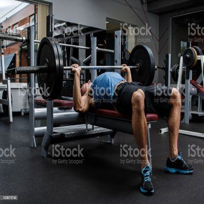

Home
Welcome! This project is to demonstrate something that I am passionate about and I am choosing fitness!
Just a random gym rat
About Me
As a toddler I was skinny and sick a lot and I had gotten used to living that sedentary lifestyle. But as I got older that began to haunt me for most of my years. Throughout the majority of my life I had gained weight from eating excessively and never doing anything except play video games. Video games have always been one of my favorite ways to pass time, but it had gotten out of hand and I eventually became obese because of the life I was living. Then in my later years of highschool I had began to lose some weight because of playing soccer, then I realized maybe I should try to actually achieve a healthy size. So my senoir year I joined a gym and became obessed with weight lifting and it changed my life for the better.
Just some chubby kids
Just some chubby kids
Weight Lifting
Weight lifitng is a form of exercise where you lift weight on a certain range of motion to provide a stimulus to the muscles. This causes damage to the muscles and then when you recover your muscles grow back even stronger than the last time. You can either lift heavy weights for a few reps which builds the muscle more or you can lift lighter weight with more reps which tones the mucles more, whichever way suits your needs. There are lots of different exercises to do and people are still creating new ones to this day. One of my favorite lifting routines is known as push, pull, legs. Push day you work all your muscles that push things (ex., chest, shoulders, and triceps). Pull day you work all the muscles that pull things (ex., back and biceps). Then finally leg day working all the muscles in your legs. Below are some compound movements that are great for each of these days.
{kind=link}
{kind=link}
{kind=link}

The bench press is great for push days
Cardiovascular Health
Many people frown upon cardio sessions because they find it to be a drag. But it can be fun you just need to find aerobic activities you enjoy. The average adult should do about 150 minutes of moderate intensity cardio per week which is easy if you just do a little bit of cardio everyday. Cardio is good for the heart and the mind. Increasing your heart rate like this will improve your heart health and give you more endurance which can correlate to better lifting sessions. It also can improve cognitive functions and provide a dopamine release when you're finished with a hard session. One of my favorite activities for cardio is swimming.
Just a swimmer swimming
Diet and Sleep
The most important part of a healthy lifestyle is a healthy, balanced diet and lots of sleep. Your diet is a direct source of your physical and and mental appearance. If your're eating a healthy diet you're going to notice your have more energy in your workouts and you feel better throughout the day. And your physical appearance will begin to change as well. Sleep is the other most important factor for a healthy lifestyle. If you arent sleeping enough you will not recover well from your workouts and you will have elevated stress levels. Lack of sleep also reduces cognitive functions and can make you feel groggy throughout the whole day. Sleep and diet go hand in hand when trying to maintain a healthy lifestyle which is why I believe they are keyu factors to achieiving any kind of goal. Better overall helath will improve your quality of life and allow you to be more succesful in the long run!
Balanced diet example